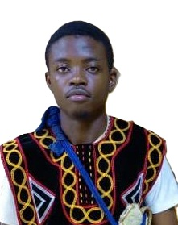
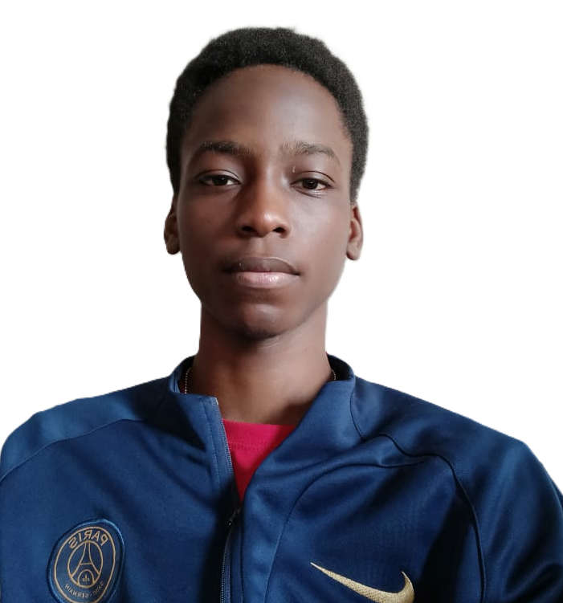
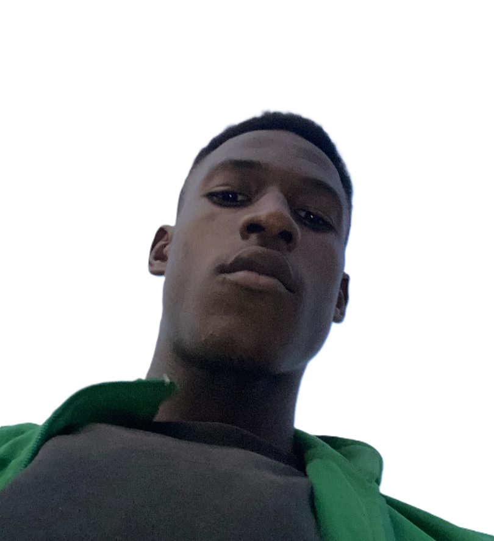

Kamdeu Yamdjeuson
Lead Engine and Network Systems Developer
Built the core game systems, multiplayer networking flow, and the technical foundation that keeps matches running smoothly.
About The Team
Who We Are
Grid Survival is a Students project created with passion for gameplay, visual polish, and multiplayer fun. This page introduces the Students team and our project supervisor.
Students Team
Lead Engine and Network Systems Developer
Built the core game systems, multiplayer networking flow, and the technical foundation that keeps matches running smoothly.
UI Designer and Front-End Developer
Designed the game interface, menus, and on-screen layout to make the experience clear, responsive, and visually engaging.
Sound Designer and Asset Builder
Created sound effects, organized game assets, and supported the visual and audio identity of the project.

Gamplay Mechanism Development
Implemented players abilities, orb behavoir, and other interactive mechanics that shape how the game feel to play.
Gameplay UI Developer
Helped implement interface interactions, gameplay screens, and the polished presentation of the player experience.

Character Artist and Sprite Animator
Produced character visuals and sprite animations that gave the game its movement, style, and personality.

Game Tester and Error Finder
Systematically tested gameplay mechanics and identified critical bugs to ensure a polished and stable player experience.
Assistant Audio Producer
Supported the audio work by helping refine sound assets, polish feedback effects, and improve the game's atmosphere.

Community and Outreach Coordinator
Managed communication, promoted the project, and helped keep the team connected with players and supporters.
Academic Supervision
We gratefully acknowledge the guidance, mentorship, and technical direction provided by Engr Daniel Moune throughout the development of Grid Survival.